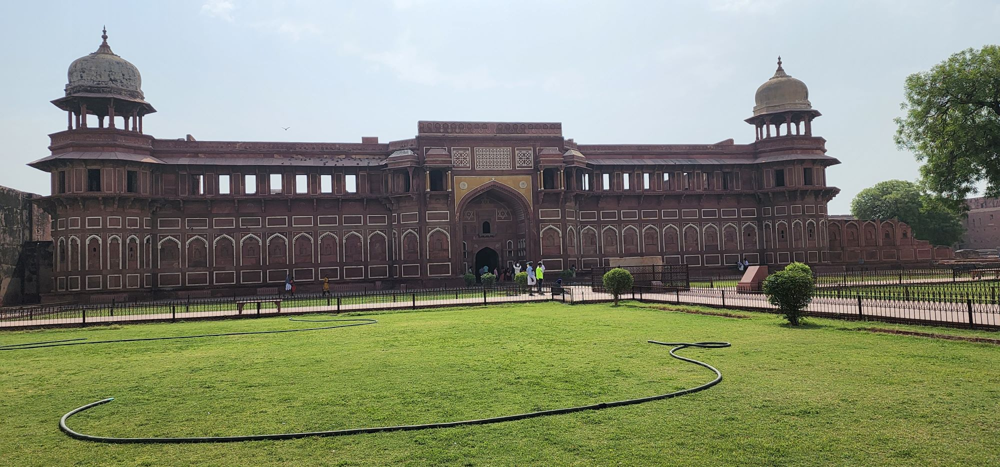

Agra: The city of wonders
The world's heritage land, city of wonder and stunning architectural. The remains of glorious Mughal Empire spread across cities.
Agra, India is a city steeped in history and cultural significance, but perhaps its most famous landmark is the Taj Mahal, a stunning monument to love. Commissioned in 1632 by the Mughal Emperor Shah Jahan as a tribute to his late wife Mumtaz Mahal, the Taj Mahal stands as a testament to the enduring power of love and devotion. We explored the rich history and stunning architecture of the Taj Mahal and delve into what makes this iconic monument a symbol of love that has captivated visitors for centuries.
Stepping into Agra, India is like stepping back in time to an era of grandeur and opulence. The magnificent fortresses and palaces that dot the city, every corner holds a new adventure. But the true gem of Agra is the Taj Mahal, a breath-taking monument to love that has stood the test of time for nearly 400 years. As we approached the Taj, we were struck by its stunning beauty, surrounded by lush greenery, and reflecting serenely in the calm waters of the Yamuna River. The white marble facade shimmered in the soft light of the sun, its intricate carvings and calligraphy a testament to the skill of the artisans who built it. Walking inside the Taj, we were transported to another world, with intricate mosaic tile work and stunning marble inlay decorating every surface. The main tomb, housed beneath the central dome, is a symphony of symmetry, with delicate floral motifs and verses from the Quran woven into the walls. But what truly takes your breath away is the feeling of love that permeates the entire space, from the stories of Shah Jahan and Mumtaz Mahal to the thousands of couples who come here to exchange their vows of love. Visiting the Taj Mahal was an experience we will never forget. From the moment we set foot inside its walls, we were struck by its timeless beauty and the depth of the love story it tells. It is a testament to the enduring power of love, and a symbol of hope and inspiration for generations to come.
Agra Fort is a stunning piece of architecture that tells the story of India's rich and complex history. As we approached the fort, we were struck by its sheer size and imposing presence, rising from the banks of the Yamuna River. The red sandstone walls are adorned with intricate carvings and inlaid with marble, reflecting the opulence and grandeur of the Mughal Empire. Stepping inside the fort, we were transported to another world, surrounded by lush courtyards and grand palaces. Each building is more stunning than the last, showcasing the intricate carvings and intricate tile work that are hallmarks of Mughal architecture. I was particularly struck by the Sheesh Mahal, a palace of mirrors that shimmered and glimmered in the soft light filtering through the intricate latticework. But what truly sets Agra Fort apart is the sense of history that permeates every corner. As we walked through its halls, we felt as though we were walking in the footsteps of emperors and courtiers, experiencing a world that was both lavish and brutal. From the sprawling grounds of the Jahangir Palace to the private chambers of the royal women, every room held its own story, a testament to the complex and rich history of the Mughal Empire. Visiting Agra Fort was a humbling experience, a chance to step back in time and experience the grandeur and elegance of one of India's most magnificent architectural treasures. It is a must-see for anyone interested in India's rich history and cultural heritage, and a testament to the enduring beauty of Mughal architecture.
The Baby Taj, also known as the Tomb of Itimad-ud-Daula, is a must-visit destination for anyone visiting Agra. This stunning mausoleum is widely considered to be a prototype for the Taj Mahal and is often referred to as the "Jewel Box" of Mughal architecture. The Baby Taj is set in a beautiful garden on the banks of the Yamuna River and is renowned for its intricate carvings, marble inlaid work, and stunning architectural design. The mausoleum is a testament to the skill and creativity of the Mughal artisans and is a fascinating example of the fusion of Persian, Indian, and Islamic architectural styles. As you wander through the complex, you'll be amazed by the intricate carvings and intricate details that adorn the walls and ceilings. The use of inlaid marble, semi-precious stones, and intricate floral designs creates a breathtaking visual experience that is sure to leave you in awe.
In addition to its stunning architecture, the Baby Taj also holds significant historical importance. It was built in memory of Mirza Ghiyas Beg, a wealthy Persian merchant who served as the Prime Minister of the Mughal Empire and was the first tomb in India to be entirely made of marble.
Fatehpur Sikri- A short drive from Agra will take you to the city of Fatehpur Sikri. It makes visitors fascinated by the rich cultural and architectural heritage of the Mughal Empire. The city, built by the great Mughal emperor Akbar the Great in the 16th century, was once the capital of the Mughal Empire. Upon arriving, we were immediately struck by the well-preserved buildings and intricate carvings that adorned the walls and pillars of the complex. We were also amazed by the sheer size of the complex, which covers an area of over 35 square kilometers.
One of the most notable buildings in Fatehpur Sikri is the Jama Masjid, a stunning mosque with a central courtyard surrounded by pillared halls and grand arches. The mosque is considered one of the finest examples of Mughal architecture and is a testament to the wealth and power of the Mughal Empire during its heyday.
Another impressive structure in Fatehpur Sikri is the Buland Darwaza, a massive gate that serves as the entrance to the complex. The gate is considered one of the largest in the world and is adorned with intricate carvings and calligraphy. As we walked through the gate, we couldn't help but feel a sense of awe at the sheer scale of the structure.
Aside from the impressive architecture, Fatehpur Sikri also has a rich cultural heritage. The city was home to several important institutions, including a palace for the emperor's wives and a school for the study of religion and philosophy. These institutions played a significant role in shaping the cultural and intellectual landscape of the Mughal Empire during its time.
In conclusion, our visit to Agra and Fatehpur Sikri was truly a memorable experience. The city's well-preserved architecture and rich cultural heritage offer a glimpse into the grandeur of the Mughal Empire during its golden age. We highly recommend a visit to this historical gem to anyone interested in Indian history and architecture. Please write to us for planning itinerary and resources.